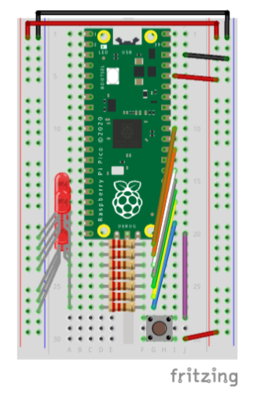

Now that we are beginning to have more than one file, it’s time to start organizing our code. We’ll do this by creating a utils.py file and moving our binary_write() function into it. The code.py file will be the main file, and it will import the binary_write() function from the utils.py directory.
Use the Mu editor to open a new file on your Pico. Save and name it utils.py (put it in the top-level folder alongside code.py). Then, move (don’t copy) the binary_write() function’s definition into utils.py. You will also want to include any necessary import statements in utils.py. Now, in the code.py file, add the following line at the top:
from utils import binary_write
The meaning of this line is that we are importing the binary_write() function from the utils.py file. The from ... import ... syntax ensures that the short name of the function is available rather than its fully qualified name utils.binary_write(). If we do import utils instead, then we would need to call the function as utils.binary_write().
Just as we learn to separate the work of our programs into functions, instead of piling everything into one big main function, we should also separate our functions into files. This makes it easier to organize our code and to find things when we need to change them.
Subsubsection3.3.1.2Part B: Bitmasking
Put all the function definitions from Exercises 3.2 into your utils.py file. You will need to add the from ... import ... statements to code.py to make them available.
Subsubsection3.3.1.3Part C: Animations
You can create marquee-style animations by using a loop to turn on and off LEDs in a sequence. For example, if you have four LEDs connected to pins 0, 1, 2, and 3, you can create a kitt animation by turning on the first LED, then the second, then the third, then the fourth, then the third, then the second, then the first, and then repeating the process. You can use the time.sleep() function to pause between turning on and off the LEDs.
Use the binary_write() function to create three different such animations. They shouldn’t look too much alike. Each one should be enclosed in a function, as below. Notice there is no while True loop. We want to be able to run it only a few times, which would be impossible if we had an infinite loop. Do not duplicate the example as one of your submissions.
You receive credit for Part C if you can show me three working animation cycles (just once through for each is fine) and the code for each uses binary_write() to turn on and off the LEDs. The binary_write() function must be imported from utils.py. Full credit solutions should make use of some of the functions from Part B.
Example3.3.1.Example: kitt animation.
def animate_kitt():
frames = [1, 1 << 1, 1 << 2, 1 << 3, 1 << 2, 1 << 1, 1]
for f in frames:
binary_write(f)
time.sleep(0.1)
Subsection3.3.2Project 03: Buttons and Input
In this project, you’ll incorporate input into your circuitry. Make sure Project 02 is completed before you start this one.
You will need to remove one LED from your circuit to make room for the button. I have used its GPIO pin for the button, but you can use any pin you like. My concern was a readable diagram.
Take care to observe that the button is not wired to the breadboard in the same was as the LEDs. The LEDs receive the high signal from GPIO through the resistor, and then current flows through the LED to ground. The button is wired so that the Pico’s power rail (make sure this is connected to 3.3V on pin 36, not 5V on pin 40 or pin 39) is connected to one leg of the button, and the other leg is connected to GPIO.
When the button is open (not pressed), no current flows through the button (it will be connected to ground through the Pico’s internal pull-down resistor). When the button is closed (pressed), current flows from the power rail through the button to GPIO, pulling the GPIO input high. Your code will allow the Pico to detect this high voltage and trigger an action.
Subsubsection3.3.2.1Part A
Wire your button to the breadboard as shown in the diagram below. Make sure the power rails (red) are connected to 3.3V only! The 5V main power lines will destroy your Pico!

Figure3.3.2.Pico with button for input.
Then you will need to make some changes in how the pins are initialized. Your button pin (GPIO 16 in my diagram) will need to be configured as an input. Because we didn’t connect the button to ground, we need to tell the Pico to use the internal pull-down resistor. This will ensure that the input is low when the button is not pressed. The code below shows how to do this.
import board
import digitalio
import time
from utils import binary_write
LED_PINS_SETUP = [board.GP16, board.GP17, board.GP18, board.GP19,
board.GP20, board.GP21, board.GP22, board.GP26]
PINS = [None] * 8
for i, led_pin in enumerate(LED_PINS_SETUP):
PINS[i] = digitalio.DigitalInOut(led_pin)
PINS[i].direction = digitalio.Direction.OUTPUT
if i == 0:
PINS[i].switch_to_input(pull=digitalio.Pull.DOWN)
PINS[i].value = False
button = PINS[0]
leds = PINS[1:]
Without the internal pull-down resistor, the input would be floating when the button is not pressed. This means that it would be neither high nor low, and it would be impossible to tell whether the button was pressed or not. The internal pull-down resistor ensures that the input is low when the button is not pressed. Without this software solution, we would need to add a physical resistor to the circuit connecting the button to ground. The internal pull-down resistor is a convenient alternative and they are ubiquitous in microcontrollers.
Subsubsection3.3.2.2Part B
The buttons are built so that they connect across the vertical groove running down the middle of the breadboard. When the button is connected, it electrically connects the two sides of the groove. When the button is pressed, both pins on the left side of the groove are connected to both pins on the right side of the groove.
Make sure all your Project 02 code is safe somewhere (in another file, not code.py, on your Pico or your laptop) and then add this code to your code.py file:
while True:
if button.value:
print("Hello sailor!")
time.sleep(0.5)
In the Serial pane, you should see the output when you press the button. When you have succeeded, play with the delay time in the call to time.sleep(). What happens if you make it too short? What happens if you make it too long? Discuss with the people in your group.
I will visit each group and check the group off together. Don’t move on to part C until you are checked off. Instead, work on HW 1.
Subsubsection3.3.2.3Part C
The difficulty with using buttons for input is that the Pico has to be listening for the button press. If the Pico is busy doing something else, it won’t be able to respond to the button press. This is why we used the time.sleep() function in the example above.
Try to adapt your animation code so that your Pico does the following on reset:
Display a short “ready” sequence, like flashing all the LEDs on and off three times.
Wait for the button to be pressed.
Display the next animation three times.
Go to step 2.
If you press the button while the animation is running, what happens? Is that what you expected, or what a typical user would expect? Discuss with the people in your group.